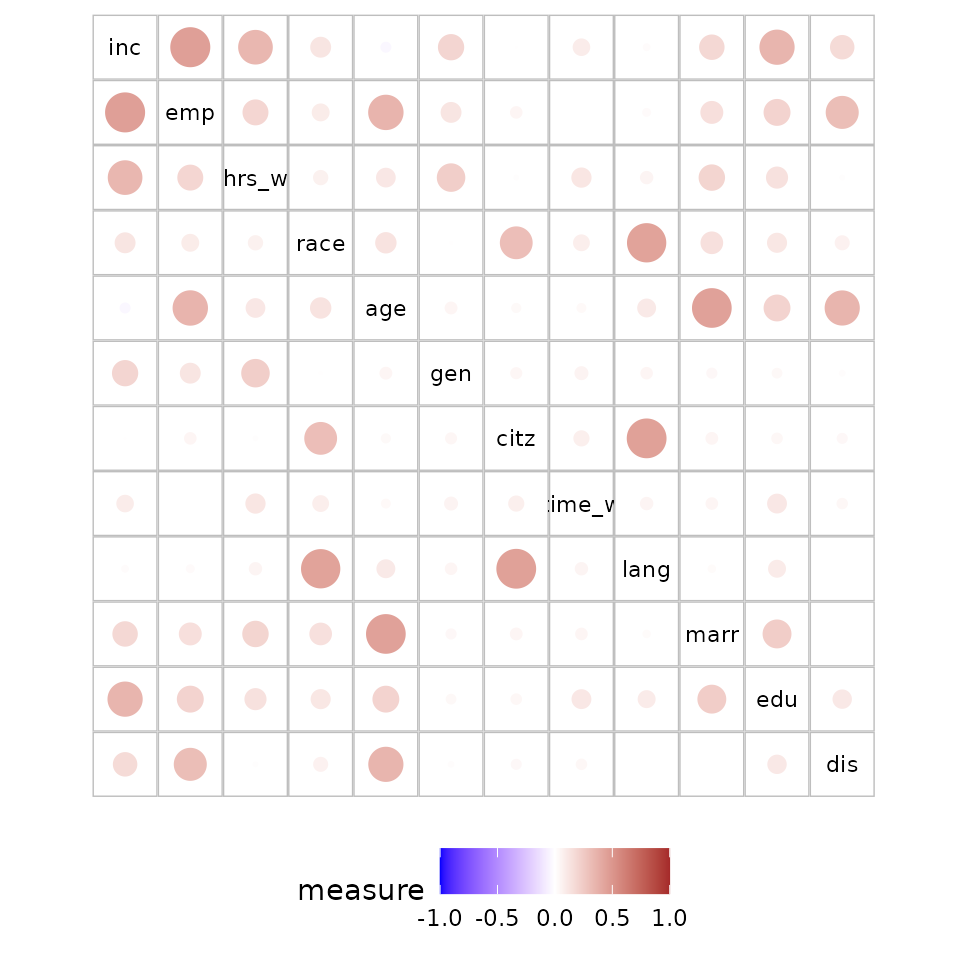
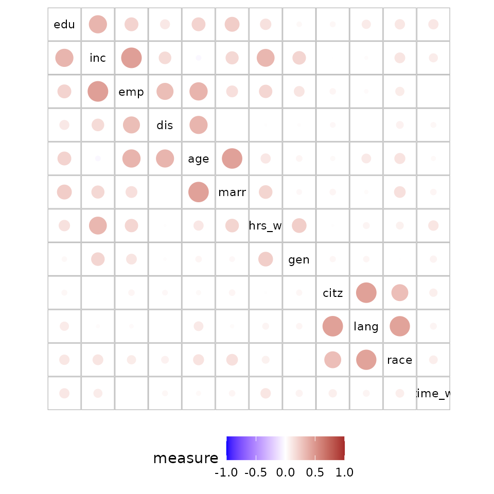
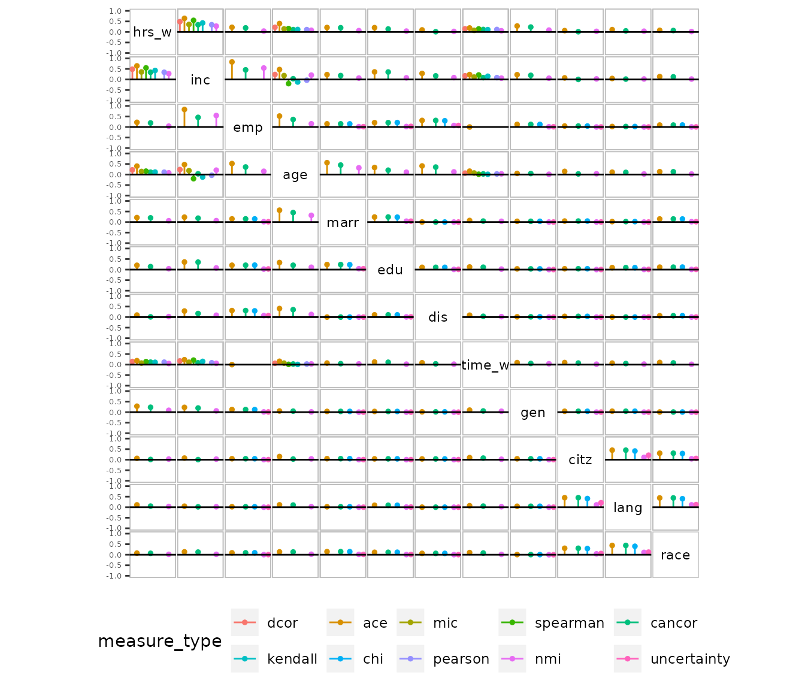
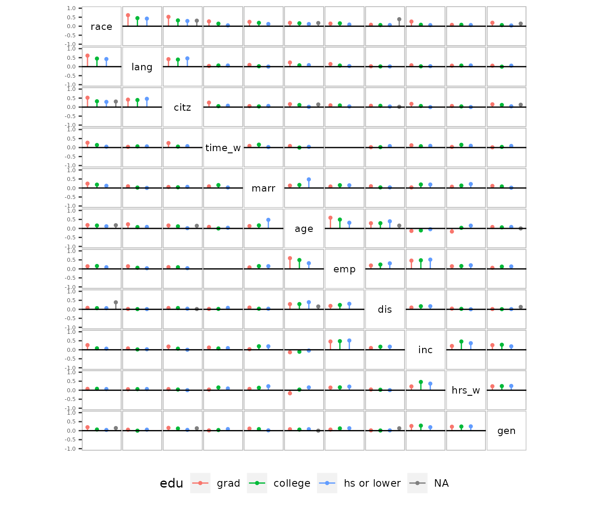

Seriation in corVis
Amit Chinwan and Catherine Hurley
2023-03-16
seriation.RmdCareful ordering of graphical displays makes it easier to identify
patterns and structures. An example of simple graphical sorting is a
barplot for Covid deaths in different countries arranged in descending
order compared to the alphabetical order of the countries. Other complex
ordering examples include Friendly (2002) who demonstrated ordered
correlation displays so that groups of variables with high mutual
correlation are easily identified and Hurley (2004) who ordered
variables in a scatterplot matrix so that interesting panels were
positioned close to the main diagonal. All the above cases illustrate
how seriation, a term to describe ordering of objects, is useful to
reveal interesting patterns. This vignette focuses on the seriation
techniques used for matrix and linear displays in
corVis.
Linear displays
We provide linear displays in the form of dot plots or heatmaps for
plotting association measures and conditional association measures in
corVis. In these displays, the items ordered are variable
pairs. We use two basic sorting techniques to seriate the variable pairs
in these displays.
The first technique involves using the maximum absolute value for ordering the variable pairs. In the case of multiple measures and conditional measures display, the variable pairs are ordered in descending order by the maximum absolute measure value of the available measures for each pair. This produces a display with highly associated variable pairs at the top, simplifying the task to identify associated variables.
Figure 1 shows the seriated linear display for acs12
(American Community Survey) data where it is easier to find highly
associated variable pairs in the plot compared to a plot with default
varaible pairs ordering. The variable pairs such as (lang,
race) and (age, employement) are
placed at the top of the display and are strongly associated.
cond_assoc_cdc <- calc_assoc(df,"edu")
plot_assoc_linear(cond_assoc_cdc, plot_type = "dotplot")
Figure 1: Conditional association measure display in linear layout with variable pair ordered by maximum absolute measure value at each level
The second technique uses the range of the measures to order variable pairs. The pairs of variables are ordered in descending order by range. As a result of this ordering, the variable pairs with highest range are placed on the top of the display, making it easier for an analyst to find variable pairs with a high difference.
Figure 2 shows a seriated linear display using the range technique.
It is easier to spot the variable pairs with high differences in the
plot. The variable pairs (birth_qtr, race) and
(married, age) are placed at the top of the
display and have highest difference among the measures.
plot_assoc_linear(cond_assoc_cdc, plot_type = "dotplot",pair_order = "max_diff")
Figure 2: Conditional association measure display in linear layout with variable pair ordered by maximum difference value at each level
Matrix displays
We use methods from DendSer package to seriate matrix
displays in corVis. In many of the seriation algorithms for
matrix displays, the first step is to produce a dissimilarity or
similarity matrix of objects to be clustered. Here, objects are the
variables of a dataset. For each cell in the matrix, a seriation weight
\(w_{ij}\) for variables \(i\) and \(j\), which measures the importance of the
cell, is assigned. The second step is to perform a hierarchical
clustering using the seriation weights \(w_{ij}\) which yields a dendrogram. The
final step is to rearrange the nodes of the dendrogram such that the
ordering of the nodes minimizes a cost function. This produces an
ordering where associated variable pairs are placed adjacent or nearby
each other. As people generally read from left to right, placing the
most important cells at the beginning or top-left corner of the display
allows an analyst to immediately identify important pairs of variables.
By selecting appropriate cost function, we provide this feature for our
matrix displays.
We use the Lazy path length (LPL) cost function proposed by Earle and Hurley (2015) to order the matrix displays. Let \(\pi\) be an order obtained from the hierarchical clustering of a matrix with n variables using the seriation weights \(w_{ij}\). Then, LPL cost function for an order \(\pi\) is defined as:
\(LPL(\pi) = \sum_{i=1}^{n-1} (n-1) w_{\pi(i),\pi(i+1)}\)
LPL is a weighted measure of path length and rewards orders with short path lengths and where the weights generally increase. The method provides a form of importance sorting and is efficient in making interesting pairs more prominent in matrix displays by placing them at the start and top-left position.
Below is a code snippet showing how dser function from
DendSer can be used to obtain an ordering for the
correlation matrix of numeric variables in iris data.
iris_n <- dplyr::select(iris,where(is.numeric))
m <- cor(iris_n)
o<-DendSer::dser(as.dist(-abs(m)),cost = DendSer::costLPL)
names(iris_n)[o]## [1] "Sepal.Length" "Petal.Length" "Petal.Width" "Sepal.Width"We use the sorting approach discussed above for all of our matrix displays to obtain variable ordering.
Association measure display
The association measure display plots a measure of association for
variable pairs in a dataset. The plotting function
plot_assoc_matrix takes a data structure with variable
pairs and corresponding measures as input. For ordering the variables, a
dissimilarity matrix is constructed first where the dissimilarity is
measured by \(-|m_{ij}|\), where \(m_{ij}\) is the association measure value
for a variable pair \((i,j)\). This is
followed by hierarchical clustering using the seriation weights (similar
to the dissimilarity measure), which produces an order such that the LPL
cost function is minimised.
Figure 3 compares the default ordering of the variables in the dataset with ordering obtained by seriation using LPL cost function. The plot on the right shows highly associated variables at the top left corner of the display, making it easier for an analyst to identify associated pairs instantly.
assoc_cdc <- calc_assoc(df)
plot_assoc_matrix(assoc_cdc, var_order = names(df))
plot_assoc_matrix(assoc_cdc)
Figure 3: Association measure display for cdc data.
Left: variables in default order of the data; right: variables ordered
by LPL cost function
A user can also supply their own ordering perhaps obtained from other
algorithm by specifying var_order argument in the
plot_assoc_matrix function.
Multiple measures display
The multiple measures display plots multiple measures of association for every variable pair in the dataset. For the seriation of this display, a similarity matrix is obtained by taking the maximum association measure value for a variable pair. Let \(m_{ij}\) denote the maximum value of the association measure for pair \((i,j)\). A hierarchical clustering is then performed with seriation weights \(w_{ij} = - |m_{ij}|\) and an optimal ordering is found using the LPL cost function.
We also use seriation to order multiple measure types in each cell of the multiple measures display. We follow the same strategy by first constructing a dissimilarity matrix of the association measures. Dissimilarity between the pairs of measure types is measured by -|Pearson correlation|. This is followed by hierarchical clustering using weights the same as the dissimilarity measure. We find the optimal ordering using the LPL criterion.
Figure 4 shows a comparison of multiple measures display before and after seriation. The plot on the right displays variable pairs with high measure value(s) on the top left corner, making it easier to find pairs of variables where any of the measures is high.
multi_assoc_cdc <- calc_assoc_all(df)
plot_assoc_matrix(multi_assoc_cdc, var_order = names(df))
plot_assoc_matrix(multi_assoc_cdc)
Figure 4: Multiple association measures display for numeric variables in penguins data. Left: variables in default order of the data; right: variables ordered by LPL cost function
Conditional association measures display
The conditional association measure display plots pairwise association measures at different levels of a conditioning variable. For ordering the variables, we use a similar strategy as with the case of multiple measures display. The only difference is that a similarity matrix is constructed by taking the maximum difference among association measure values at different levels of the conditioning variable for a variable pair.
For ordering levels of the conditioning variable, we follow a similar approach used for ordering measure types in multiple measures display.
Figure 5 shows the difference in conditional association measure
displays before and after seriation. The variable pairs with high
differences in measure value for a grouping variable are placed at the
beginning of the seriated display on the right. This helps in quickly
finding pairs with high group differences. The plot shows variable pairs
(flip_l, bill_d) and (flip_l,
mass) with high difference in measure value at different
levels of the conditioning variable species.
cond_assoc_cdc <- calc_assoc(df,by="edu")
df_order <- names(df)[-10]
plot_assoc_matrix(cond_assoc_cdc, var_order = df_order)
plot_assoc_matrix(cond_assoc_cdc)
Figure 5: Conditional association measures display for cdc data. Left: variables in default order of the data; right: variables ordered by LPL cost function